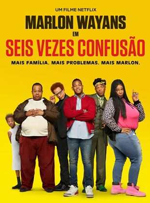

Após ser roubado, o traficante de meia tigela David Clark é obrigado por seu chefe, Brad Gurdlinger,
a viajar até o México para fechar uma negociação envolvendo um grande carregamento de maconha.
Para isso, David precisa formar uma família de mentira e convida a stripper Rose para ser sua
falsa esposa. A delinquente Casey e o virgem Kenny logo entram no plano e juntos eles formam os Miller,
que aparentemente estariam fazendo uma pacata viagem rumo ao México a bordo no trailer da família.
Entretanto, ao longo do caminho, os antigos hábitos voltam à tona e nem tudo sai
como o planejado.

Sinopse
Prestes a se tornar pai, Alan quer descobrir a sua origem, pois não conhece seus pais. Com a ajuda do
seu sogro, um juiz influente, consegue descobrir o nome de sua mãe e vai procurá-la.
Chegando ao local, descobre que tem um irmão gêmeo. Após se deparar com uma caixinha escondida, encontra
um jornal antigo e certidões de nascimento que, para a surpresa dos dois, mostra que além deles,
existem mais quatro irmãos, e eles são sêxtuplos.
Sinopse
Quando criança, John desejou que seu ursinho Ted ganhasse vida e, surpreendentemente, foi atendido. Porém,
agora que é adulto, ele precisa lidar com as consequências de seu pedido, já que Ted não vai parar de atormentar a sua vida.
Sinopse
Becca, uma adolescente angustiada, está dividida entre duas possibilidades: o vampiro Edward e o lobisomem Jacob.
Mas ela precisa encontrar uma maneira de se livrar do pai controlador, que a trata como uma criança indefesa.
Enquanto isso, suas amigas têm seus próprios problemas românticos que virão à tona no baile de formatura.